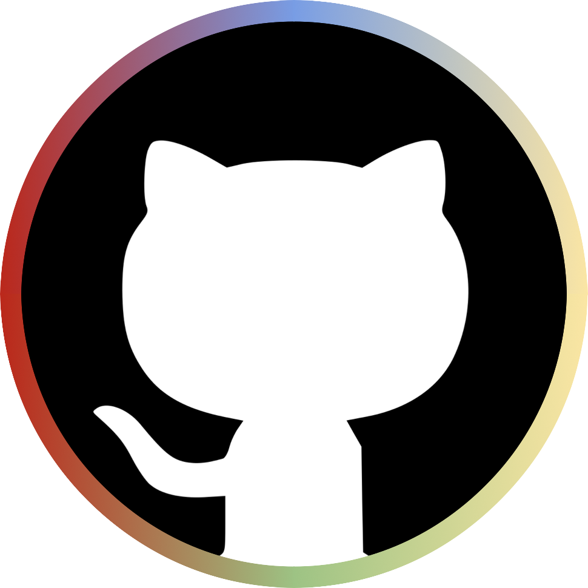

dMRI pipeline finder

Which pipeline fits your diffusion data?
Pick your study population. Each category runs its own short questionnaire, tailored to the criteria that actually matter for that kind of data, and reads its own Excel comparison table.